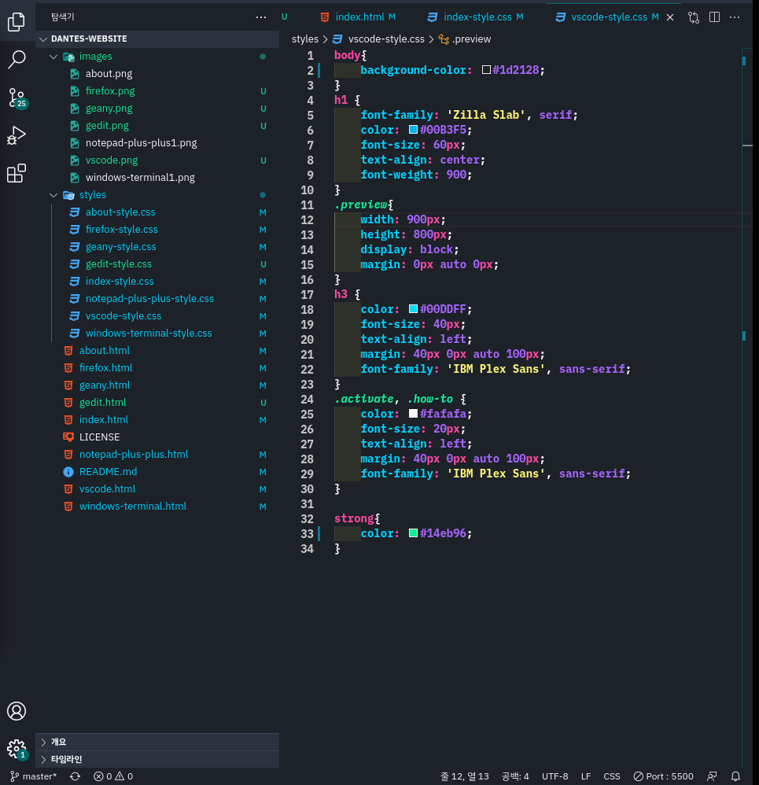

Visual Studio Code

Install
- Go to View -> Command Palette or press Ctrl+Shift+P
- Then enter Install Extension
- Write Dantes
- Select it or press Enter to install
Activating Theme
Run Visual Studio Code. The Monte Cristo Theme will be available from File -> Preferences -> Color Theme dropdown menu.